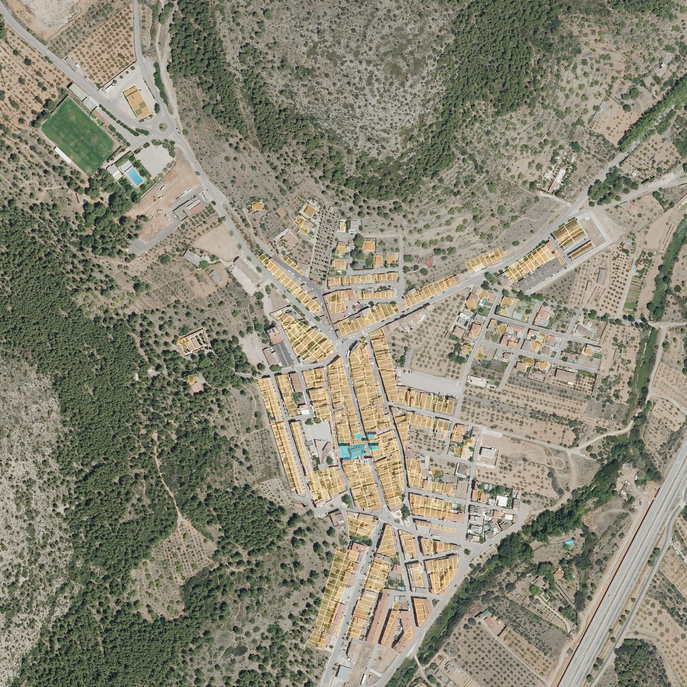

Inspect the building footprints against the aerial reference

Gold outlines show building sections; cyan marks the five modeled landmarks. PNOA aerial reference, traced and annotated. CC BY 4.0 scne.es — IGN/CNIG.

Gold outlines show building sections; cyan marks the five modeled landmarks. PNOA aerial reference, traced and annotated. CC BY 4.0 scne.es — IGN/CNIG.